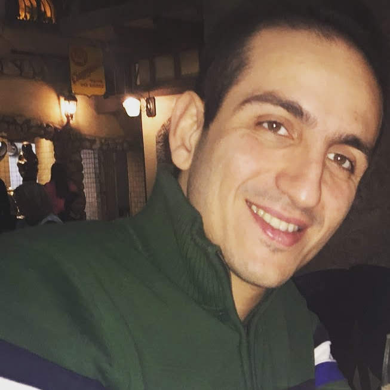

Hi, I'm Amir Behbahanian
Machine Learning Engineer | LLM Agents, Simulation & Evaluation for Science and Engineering
I build AI systems that do real engineering work: LLM agents that drive simulation and retrieval tools, the evaluation loops that tell us whether their output is actually right, and the production services around them. I'm currently a Machine Learning Engineer at Blue Origin. Before that I built simulation-driven multi-agent systems and RAG platforms in industry, and spent a Ph.D. and postdoc in computational materials science running large-scale molecular-dynamics and DFT campaigns and building Bayesian-optimization loops for materials discovery. A decade of writing software for physics and engineering problems sits underneath all of it.

About Me
I'm a Machine Learning Engineer at Blue Origin, working on applied AI systems. My focus across roles has been the same: take an ambiguous 0-to-1 problem from dataset and modeling design through evaluation, deployment, monitoring, and the user-facing workflow, and be honest about where the model isn't good enough yet.
Previously I led a four-person team at Dyno Nobel building a cloud-native simulation and optimization platform around patent-pending C++ physics models, and designed a multi-agent system that invoked those simulators to evaluate candidate blast plans and recommend actions under domain constraints. I also built the company's first RAG platform. At T.D. Williamson I shipped a distributed predictive-maintenance system on C++ edge devices and a real-time corrosion-detection model published at ICMLA 2023.
I hold a Ph.D. in Mechanical Engineering from Utah State University, where I studied vibrational physics in crystalline and amorphous materials with large-scale molecular dynamics. As a postdoc at Texas A&M I built a surrogate-model and Bayesian-optimization workflow for closed-loop materials discovery, and at Tokyo Electron I automated DFT post-processing pipelines for thermal and electrical property prediction. I like problems that start fuzzy and end with something shipped and verified.
What I Do
Production LLM Agents
Tool-using agents, RAG and graph-based retrieval, online serving, monitoring, and integration into the workflows engineers already use. Shipped to real users, not demos.
Simulation-Driven AI
Multi-agent systems that invoke physics simulators, evaluate candidate designs, and recommend actions under domain constraints. Bayesian optimization and surrogate modeling for closed-loop discovery.
Evaluation & Verification
Benchmark design for LLM and vision models, success criteria defined with domain experts, Monte Carlo and uncertainty analysis for physical measurements. Honest about where a model isn't good enough yet.
Scientific Computing
DFT (VASP, Quantum ESPRESSO), molecular dynamics (LAMMPS), Phonopy, AMSET, HPC job orchestration, and parallel pipelines over multi-terabyte simulation data. Ten-plus peer-reviewed publications.
My Work
AI Systems & Machine Learning
Simulation-driven multi-agent planning and RAG at Dyno Nobel, an LLM-orchestrated engineering IDE, an AI-integrated physics engine, an open-source agentic news platform, and industrial computer vision and time-series models.
Learn MoreComputational Material Science Projects
Doctoral and postdoctoral research on vibrational physics and material properties: automated high-throughput DFT workflows, phonon wave-packet simulations, molecular dynamics of disorder, and uncertainty analysis of experimental measurements.
Learn More